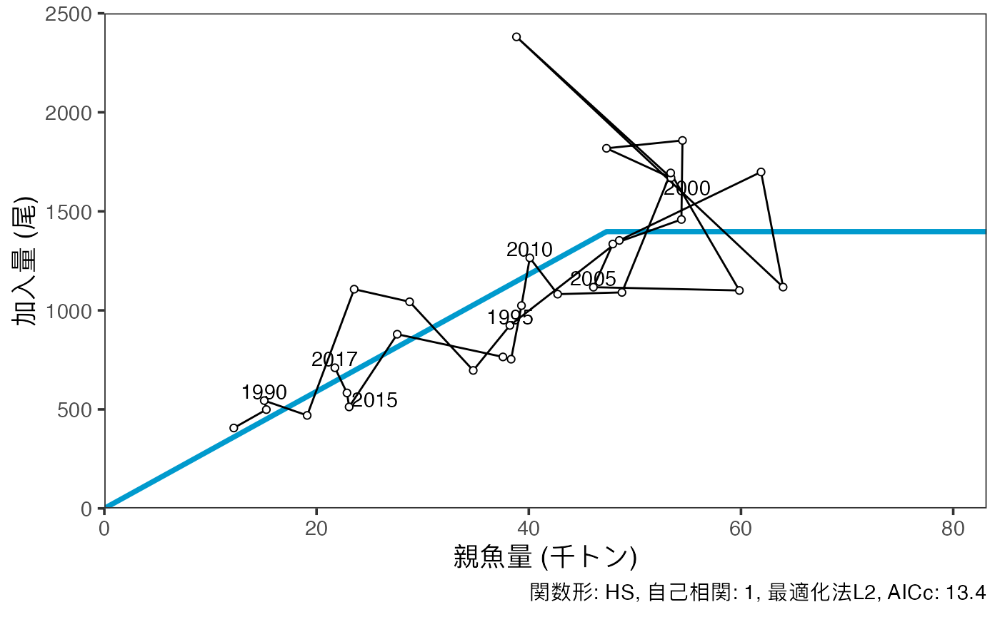
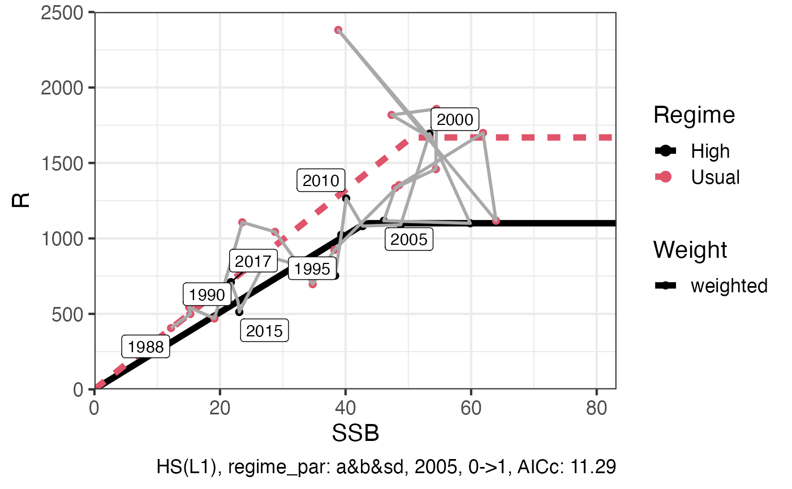

fittingSR.Rmd再生産関係の推定を行う手順を説明します。将来予測・管理基準値計算チュートリアル (../docs/future.html) の例を使います。
パッケージfrasyrのvpa関数の返り値を再生産関係を推定するfitSR関数に渡すまえに、fitSRの引数のオブジェクトをget.SRdata関数を使って作成します。
library(frasyr)
#> Warning: replacing previous import 'magrittr::set_names' by 'purrr::set_names'
#> when loading 'frasyr'
#> Warning: replacing previous import 'EnvStats::qpareto' by 'rmutil::qpareto' when
#> loading 'frasyr'
#> Warning: replacing previous import 'EnvStats::ppareto' by 'rmutil::ppareto' when
#> loading 'frasyr'
#> Warning: replacing previous import 'EnvStats::rpareto' by 'rmutil::rpareto' when
#> loading 'frasyr'
#> Warning: replacing previous import 'EnvStats::dpareto' by 'rmutil::dpareto' when
#> loading 'frasyr'
#> Warning: replacing previous import 'assertthat::has_name' by 'tibble::has_name'
#> when loading 'frasyr'
#> Warning: replacing previous import 'rmutil::nesting' by 'tidyr::nesting' when
#> loading 'frasyr'
#> Warning: replacing previous import 'magrittr::extract' by 'tidyr::extract' when
#> loading 'frasyr'
data(res_vpa)
SRdata <- get.SRdata(res_vpa)
names(SRdata)
#> [1] "year" "SSB" "R"オブジェクトSRdataには、データの年year、親魚量SSB、加入量Rが入ります。
引数を指定することでHockey-Stick型/Beverton-Holt型/Ricker型のそれぞれで再生産関係を推定できます。また、methodオプションで推定方法として最小絶対値法と最小二乗法を選べます。さらに、加入の残差に時間トレンドを考慮し、オプションAR=1として自己相関を考慮することができます。
## 再生産関係にHockey-Stick型を指定（SR="HS"）します。推定方法を最小二乗法とし（method="L2"）、自己相関を仮定しない（AR=0）場合。
resL2 = fit.SR(SRdata, SR = "HS", method = "L2", out.AR = FALSE, AR = 0)
## 再生産関係にHockey-Stick型を指定します。推定方法を最小絶対値法とし（method="L1"）、自己相関を仮定しない（AR=0）場合。
resL1 = fit.SR(SRdata, SR = "HS", method = "L1", out.AR = FALSE, AR = 0)##自己相関の内側推定、外側推定
加入の残差に時間トレンドを考慮した自己相関のオプションには２通りの推定方法が設定されています。再生産関係の関数の中に自己相関を仮定する内側推定と、関数の推定の後から誤差に自己相関を推定する外側推定です。（内側・外側の表現は科学的に確立したものではなく、この関数を利用するにあたってさし当りの表現です。）
## 再生産関係にHockey-Stick型を指定（SR="HS"）し、推定方法を最小二乗法とし（method="L1"）、自己相関を外側で仮定する（AR=1,out.AR=T）場合。
resL1outer = fit.SR(SRdata, SR = "HS", method = "L1", out.AR = TRUE, AR = 1)
## SR="HS", method="L2"として、自己相関を内側で仮定する（AR=1,out.AR=F）場合。
resL2inner = fit.SR(SRdata, SR = "HS", method = "L2", out.AR = FALSE, AR = 1)この再生産関係の妥当性はモデル選択によって検証する必要があります。説明は (./Diagnostics-for-SR.Rmd)を参照してください。
##結果の出力と図示
out.SRで結果をtxtファイルに出力できます。例としてresL2innerを使用します。プロットにはSRplot_ggが使えます。

## 図をpng形式で保存する。
ggsave_SH(g1, file = "SRcurve.png")次に、レジームで再生産関係を分けて推定する場合について説明します。推定にはfit.SRregimeを使います。ここではHS, L1で、2005年にレジームシフトが生じた場合を候補とします。 仮に1995年と2005年に2回レジームシフトが起こったとして、レジームがA->B->Aと変化する場合はregime.key = c(0,1,0)、A->B->Cと変化する場合はregime.key = 0:2と指定します regime.year = c(1995,2005)と指定してください。 regime.parはレジームごとに異なるパラメータを設定します。今はすべてのパラメータが異なる場合 (resR1)とaは共通でbとsdが異なる場合 (resR2) を使います。 AICc等の結果はfit.SRと比較できます。
resR1 <- fit.SRregime(SRdata, SR = "HS", method = "L1", regime.year = c(2005), regime.par = c("a",
"b", "sd")[1:3], use.fit.SR = TRUE, regime.key = c(0, 1))
resR2 <- fit.SRregime(SRdata, SR = "HS", method = "L1", regime.year = c(2005), regime.par = c("a",
"b", "sd")[2:3], use.fit.SR = TRUE, regime.key = c(0, 1))
c(resL2$AICc, resL1$AICc, resL2inner$AICc, resR1$AICc, resR2$AICc)
#> [1] 10.79385 14.07974 13.40053 11.29241 19.24803#結果の出力と図示
fit.SRのときと同様にout.SRで結果をtxtファイルに出力できます。プロットにはSRregime_plotが使えます。
out.SR(resR1, filename = "Regime1")
## プロットする。
(g2 = SRregime_plot(resR1, regime.name = c("Usual", "High")))
#> Joining, by = c("Regime", "SSB", "R", "Category")
## 図をpng形式で保存する。
ggplot2::ggsave(g2, file = "SRregime_curve.png", unit = "mm", width = 240, height = 120,
dpi = 600)